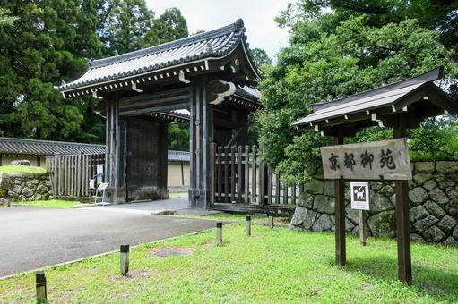

2026年6月2日
京都御所は、 明治維新まで歴代の天皇が暮らしていた宮殿です。 広大な京都御苑の中にあり、 歴史と自然の両方を楽しめる人気スポットです。

京都御所とは？
794年の平安京遷都以降、 長い間日本の政治と文化の中心でした。 現在は一般公開されており、 誰でも見学することができます。
静かな空気の中に、
千年以上の歴史が息づいています。
見どころ
・紫宸殿（ししんでん）
・清涼殿（せいりょうでん）
・建礼門
・御池庭
おすすめ写真スポット
建礼門周辺は特に人気です。 広々とした御苑の並木道も、 四季折々の風景を撮影できます。
おすすめの季節
春の桜、 秋の紅葉が特に人気です。 京都御苑では季節ごとの自然も楽しめます。
京都御苑を歩こう
京都御所を囲む京都御苑は、 市民の憩いの場でもあります。 ベンチで休憩したり、 ゆっくり散策したりするのもおすすめです。
周辺グルメ
烏丸エリアには 京料理店や和菓子店、 おしゃれなカフェが並びます。
← トップページへ戻る